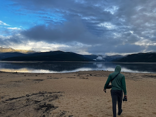

Michael D. Green, PhD
Population Health Sciences Researcher
Postdoctoral Fellow
Johns Hopkins Bloomberg School of Public Health
I am a United States based population health researcher focusing on understanding how unequal treatment in healthcare leads to health inequities, and how to solve them.
About My Research
My name is Michael D. Green, and I am a population health sciences researcher, who completed a Ph.D. in Population Health Sciences at the Duke University School of Medicine in 2025. I was born in Maryland, but moved 7 times before the age of 18. I am a member of the Dartmouth College class of 2021, where I graduated with Honors in Anthropology and a minor in Environmental Sciences. I additionally was a 4-year varsity athlete on the Heavyweight Rowing team, which I joined without any prior experience during the winter of my Freshman year.
Growing up, many of my family members and loved ones suffered through numerous health ailments. Ever since I was young I was always focused on the "why" questions regarding these ailments. As I matured through my academic career those why questions became more complex. Why is there so much socio-economic disparity in the world? Why are there so many disparities in health outcomes?
Currently, I believe that I need to use the information I gained on "why" issues occur in order to apply them to questions on "how" we can disrupt these issues. I focus on methodology for fixing many of the problems that I spent so much of my early life pondering. I hope that I am able to illuminate, and eventually solve, population health issues that are consequences of social determinants of health.
 View Google Scholar Profile
View Google Scholar Profile
Research Focus
My research examines the intersection of healthcare discrimination and health outcomes, with particular emphasis on cardiovascular and cognitive health disparities. I employ mixed-methods approaches and advanced quantitative techniques to understand how systemic inequities manifest in health outcomes.
Current Research Areas
Healthcare Discrimination Measurement
Systematic review and psychometric evaluation of discrimination measurement instruments in healthcare settings following PRISMA-COSMIN guidelines. This work aims to establish best practices for assessing patient experiences of discrimination and their health impacts.
Patient-Provider Interactions
Longitudinal analysis of associations between discrimination experiences and healthcare utilization patterns using the Health and Retirement Study. Investigating how experiences of discrimination shape patient engagement with the healthcare system over time.
Cardiovascular Health Disparities
Group-based trajectory modeling and survival analysis examining relationships between healthcare discrimination and cardiovascular outcomes. Exploring how discrimination experiences contribute to disparate cardiovascular disease burden across populations.
Cognitive Aging & Dementia
Emerging research focus on Alzheimer's disease and related dementias (AD/ADRD), investigating how social determinants of health and discrimination experiences influence cognitive aging trajectories and dementia risk.
Selected Publications
A comprehensive list of publications will be added here. This section will be automatically updated with new publications in future updates.
Dissertation: Getting to the Heart of Discrimination in Healthcare
Duke University, 2024
Three-paper dissertation examining healthcare discrimination through measurement validation, longitudinal analysis of patient-provider interactions, and cardiovascular outcomes.
Publications
All published manuscripts are available on this page linked here. You can click on the images below to view specific projects. (Last Update 1/2026)
All publications are also automatically fetched from my ORCID profile. ORCID provides a persistent digital identifier that distinguishes me from other researchers and ensures proper attribution of my work.
Published Works
Curriculum Vitae
Download my complete CV for detailed information about my education, research experience, publications, presentations, and awards.
Academic Positions
Postdoctoral Fellow
Department of Health, Behavior, and Society
Johns Hopkins Bloomberg School of Public Health
2026 - Present
Advisor: Roland J. Thorpe Jr.
Supported by NIA K00 Award. Fellowship focused on research and training in cognitive health and Alzheimer's disease/related dementias (AD/ADRD)
Research Expertise
Methods
- Longitudinal data analysis
- Group-based trajectory modeling
- Multi-trajectory modeling
Research Areas
- Healthcare discrimination
- Social determinants of health
- Cardiovascular epidemiology
- Aging
Education
PhD, Population Health Sciences
Duke University School of Medicine
2025
Dissertation: "Getting to the Heart of Discrimination in Healthcare"
Dissertation Committee:
- Chair: Matthew E. Dupre
- Emily C. O'Brien
- Ann Marie Navar
- M. Alan Brookhart
- Roland J. Thorpe Jr.
BA, Anthropology with Honors
Dartmouth College
2021
Minor in Environmental Sciences
Thesis Advisor: Elizabeth Carpenter-Song
Honors & Awards
Person-in-Training Award, Health Sciences Section
Gerontological Society of America
November 2025
The Person-in-Training Award is given to a student of the Health Sciences section for the best student paper at the Society's Annual Scientific Meeting. The award is designed to encourage research and to foster interest among students in the Health Sciences section and to encourage participation in the Society's Annual Scientific Meeting.
F99/K00 Predoctoral to Postdoctoral Fellowship
National Institute on Aging (NIA), NIH
2024-2029
Awarded competitive NIH fellowship intended to support the transition of talented graduate students into successful research postdoctoral appointments.
Class of 1950 Award for Community Service
Dartmouth College, Department of Athletics
June 2021
This award goes "to the varsity student-athlete who has demonstrated the most extraordinary commitment to community service, as nominated by varsity head coaches and captains, and selected by the Director of Athletics, Dean of the College, and Director of the Center for Social Impact."
Legacy Award
Dartmouth College, Division of Student Affairs and Dean of College
June 2021
Legacy Awards recognize students whose efforts and accomplishments reflect one or more of the values that guide the Division of Student Affairs at Dartmouth. Given to 14 students annually.
Global Health Certificate
Dartmouth College, The John Sloan Dickey Center for International Understanding
January 2021
From center website: "provides students with a framework to demonstrate the knowledge and skills they have acquired to address complex global health challenges in a changing world. The Certificate combines coursework from across the curriculum with a field experience in global health."
Media
I'm committed to translating research findings into accessible information for diverse audiences and contributing to public discourse on health equity and healthcare disparities.
Science Communication
I write about health equity, population health research, and the intersection of science and policy on my Substack, Not Being Green.
Recent Posts
Media Appearances & Interviews
Rethinking 'Race' to Reconstruct Research Practices: Introducing Population-Conscious Analysis
AAMC Center for Health Justice, October 2025
Moderated a talk which "introduce a novel method, population-conscious analysis, which resolves the inappropriate use of race/ethnicity while also systematically assessing this critical factor, shifting the focus from describing health differences between social groups to understanding the mechanisms that produce those differences."
Dismantling the Health Workforce Pathway
Social Mission Alliance, September 2025
Panelist on a webinar which was "A conversation highlighting the impacts of federal policies on the future of the health workforce in the United States, its potential impacts on health care access for our most vulnerable, and what we can do now to prevent it. We will focus on the various funding sources that have been impacted (financial aid caps, grant access to trainees) and how they've historically helped health workers that serve the country's most vulnerable populations."
Stories from the Field: The Impact of Federal Funding Cuts on Population Health Researchers
Milbank Memorial Fund: The Milbank Quarterly, June 2025
Contributed to a series of testimonials on the impact of federal funding cuts.
NIH Grants Were a Huge Part of My Training. How Will We Bridge the Gap Now?
Interdisciplinary Association for Population Health Sciences, June 2025
Blog post I wrote detailing my concern about the cancellation of NIH award opportunities that have the specific target of increasing sociodemographic representation in biomedical research.
Careers in Population Health Sciences Beyond Academia
Interdisciplinary Association for Population Health Sciences, April 2025
Panel I moderated surrounding non-academic job career paths for population health sciences trainees.
Academic Careers: Exploring Institutional Differences And Charting Your Path With Advice From Leading Scholars
Interdisciplinary Association for Population Health Sciences, July 2024
Panel I moderated surrounding academic job market search strategies.
Value of IAPHS Membership
Interdisciplinary Association for Population Health Sciences, March 2024
Blog post I was featured in.
Abstract Writing Workshop For Students
Interdisciplinary Association for Population Health Sciences, February 2024
A workshop for students in which we discuss tips, review samples, and share helpful strategies for writing a clear and concise conference abstract.
Black Men Pursuing PhDs Interview Series: Ep. 1
Black Male Professors and Researchers Collective, August 2023
Video Interview discussing research background and decision-making when applying to graduate school.
Advancing Heart Health Equity with Michael Green
The Public Health Millennial, April 2023
Interview for Emerging Changemakers Zone portion of the blog "The Public Health Millennial".
Heavyweight Rower Michael Green Named a 2021 Dartmouth Legacy Award Winner
Dartmouth Sports, June 2021
Green honored for his work as a mentor in several organizations.
Michael D. Green: I Want Other Children to Learn the Lessons and Experience the Rush of Rowing
Row2k, December 2020
Feature interview about rowing and mentorship.
Michael D. Green: Subjectivity and Unpacking Inequities in Rowing
Rowing in Color, November 2020
A podcast that amplifies the voices of color in rowing.
Black Rowers and Coaches Roundtable - Sponsored by Rowing in Color
United States Rowing, June 2020
Roundtable discussion on diversity and inclusion in rowing.
Intern Experience More Than Expected at the CDC
Dartmouth Sports, March 2020
Reflection on 10-week internship at the Centers for Disease Control and Prevention.
Big Green rower had front-row seat to the crisis response at CDC
Valley News, March 2020
Coverage of internship experience at CDC during early COVID-19 response.
For Fun
Outside of research, I stay active and creative through a mix of running, hiking, occasional film photography, and travel (a city with a subway or a mountain town).
LA Chargers Fan

Die-hard Chargers fan — here at SoFi Stadium
Running

Here is my most versatile playlist — fully satisfies no one but also rarely dissatisfies everyone.
Hiking


Film Photography


Travel


Photography

Podcasts I Enjoy
Some podcasts I regularly listen to:
Why Should I Trust You
Explores why so many people don't trust public health and institutions, and whether we can build back from that. The hosts invite diverse perspectives and approach every conversation with compassion and understanding. (Clearly related to my work.)
Hard Fork
Each week, journalists Kevin Roose and Casey Newton explore and make sense of the rapidly changing world of tech.
Hops with Pop
A podcast and Substack blog by Daniel Popper, The Athletic's Chargers beat writer.
Your Unapologetic Career Podcast
By Kemi Doll, a career coach for women of color in academic medicine. I don't identify as such, but appreciate her insights and candor.
What the Health
A healthcare policy podcast from the Kaiser Family Foundation.
On with Kara Swisher
The podcast of tech/media journalist Kara Swisher, my favorite interviewer.
Connect With Me
Follow my work and connect with me on social media for updates on research, health equity discussions, and insights from population health sciences.


Get in Touch
I'm always interested in connecting with fellow researchers, collaborators, and those interested in health equity research. Feel free to reach out through any of the channels below.
Signal
Collaboration Interests
I'm particularly interested in collaborations involving:
- Diversity and representation in clinical trials
- Healthcare discrimination
- Quality of healthcare